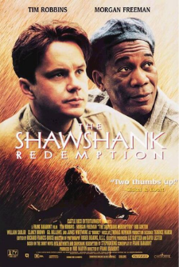
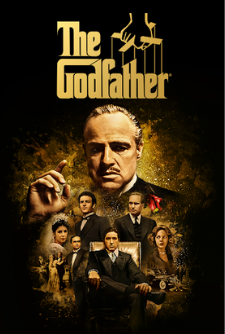
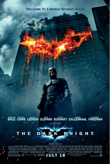

IMDb Charts
IMDb Top 3 movies
 |
1. The Shawshank Redemption1994 2h 22m 15 Rating: 9.3 (3.1M) |
 |
2. The Godfather1972 2h 55m 15 Rating: 9.2 (2.1M) |
 |
3. The Dark Knight2008 2h 32m 12A Rating: 9.3 (3.1M) |